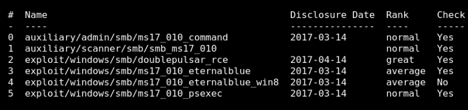

3. Search Exploit
Output:

Any of the list wil work, so let's use another one.
a) Get the send_and_execute.py here.
You can see in the file “send_and_execute.py “ that it works for "Windows XP SP3”.
Tested on:
- Windows 2016 x64
- Windows 10 Pro Build 10240 x64
- Windows 2012 R2 x64
- Windows 8.1 x64
- Windows 2008 R2 SP1 x64
- Windows 7 SP1 x64
- Windows 2008 SP1 x64
- Windows 2003 R2 SP2 x64
- Windows XP SP2 x64
- Windows 8.1 x86
- Windows 7 SP1 x86
- Windows 2008 SP1 x86
- Windows 2003 SP2 x86
- Windows XP SP3 x86
- Windows 2000 SP4 x86
b) Create on your Kali Linux Machine a new directory called “winxpsp3” to save all the following files you'll need. Index
Index